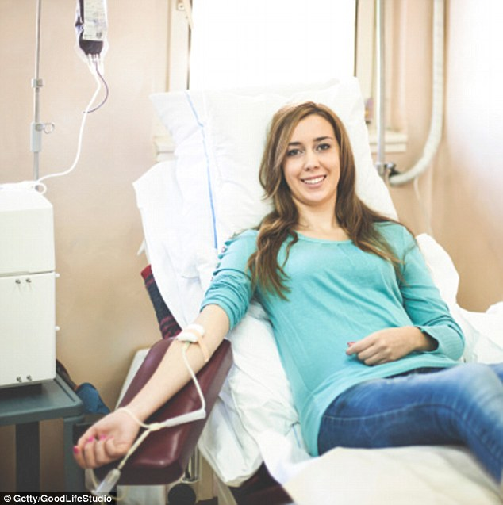

Donar Eligibility for Plasma Donation
Namaste,
Do you know about convalescent plasma, which is taken from a person who has been cured of corona infection. In short, it may be a promising alternative in the treatment of plasma COVID-19 disease.
If you have ever been infected with corona and have become corona negative after infection, you have been treated for 14 days and you are feeling healthy then only you are eligible to donate Convalescent Plasma.
By becoming a plasma donor, with your priceless plasma, you can give a new hope of life to the corona patient!
Thank you.
